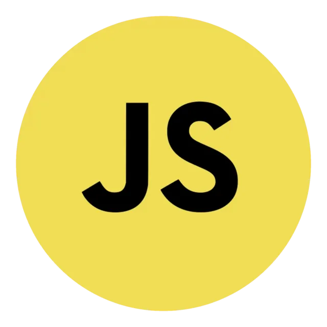

Recursos Utilizados
Para el desarrollo de este proyecto se han utilizado las siguientes tecnologías que se detallan a continuación:
-
HTML (Hyper Text Markup Language)
- HTML es el lenguaje de marcado estándar para la creación y el diseño de páginas web. Permite estructurar el contenido de una página utilizando etiquetas que definen elementos como encabezados, párrafos, enlaces, imágenes, formularios, entre otros.
- El contenido de este sitio web forma parte de un proyecto de 2º de DAW y sus fines son informativos y de entretenimiento.
-
 CSS
(Cascade Style Sheet)
CSS
(Cascade Style Sheet)
- CSS es un lenguaje de estilo utilizado para controlar la presentación y el diseño de los elementos HTML en una página web. Permite aplicar estilos, como colores, fuentes, márgenes y alineaciones, para mejorar la apariencia y la disposición de los elementos en una página.
-
JS (JavaScript)
- JavaScript es un lenguaje de programación de alto nivel que se utiliza para hacer que las páginas web sean interactivas y dinámicas. Permite la manipulación del contenido HTML, la respuesta a eventos del usuario y la comunicación con servidores, entre otras funcionalidades.
-
TW (Tailwind CSS)
- Tailwind CSS es un framework de CSS que simplifica el desarrollo y la personalización de estilos en una aplicación web. En lugar de proporcionar estilos predefinidos, Tailwind se basa en clases utilitarias que se aplican directamente en el HTML, lo que ofrece flexibilidad y mantenimiento sencillo.
-
VITE
- Vite es un entorno de desarrollo rápido para aplicaciones web. Se centra en la velocidad durante el desarrollo al proporcionar una experiencia de desarrollo ágil con recarga en caliente, lo que significa que los cambios se reflejan de inmediato sin necesidad de recargar la página. Vite es especialmente útil para proyectos basados en JavaScript, TypeScript y Vue.js.
-
 MovieDB
MovieDB
- The Movie Database (TMDb) es una base de datos en línea de información relacionada con películas, series de televisión y contenido de transmisión en línea.
- La base de datos incluye metadatos como pósters, fondos de pantalla, tráilers, calificaciones de audiencia y críticas de películas y programas de televisión, así como información sobre actores, directores y miembros del equipo.
- Nuestra web utiliza la API de TMDb para obtener la información de las películas y series, además de su respectivo reparto.
- Hemos tomado la decisión de usar esta API ya que es muy completa y ofrece una gran cantidad de información, además de ser gratuita.